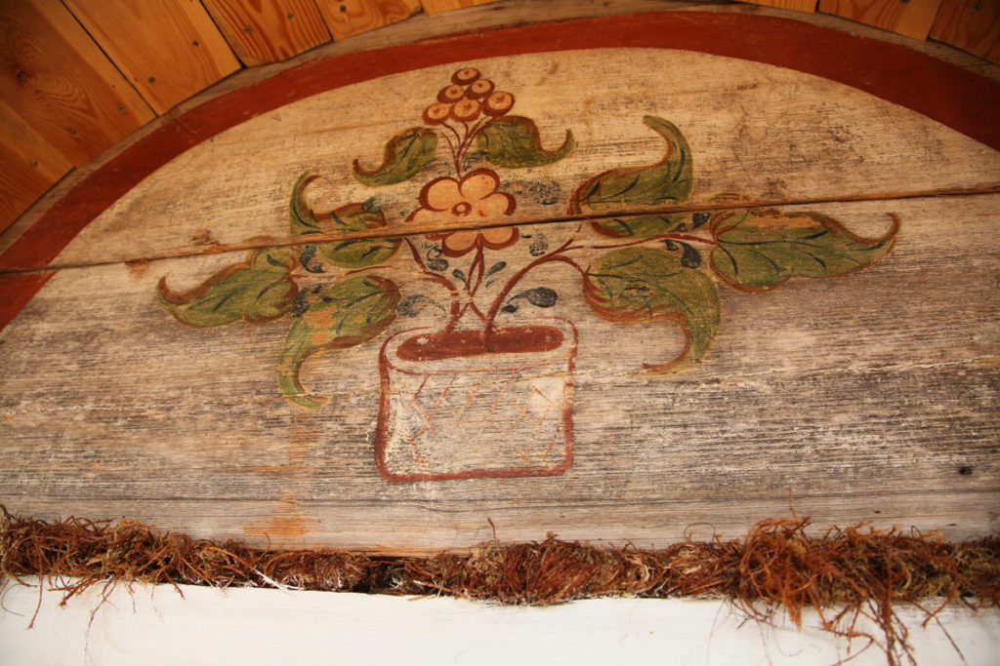
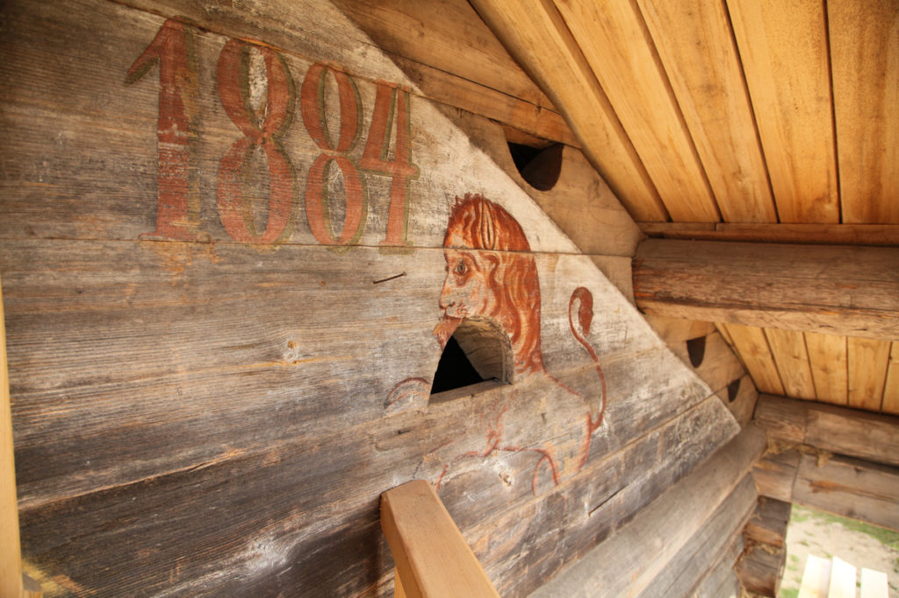
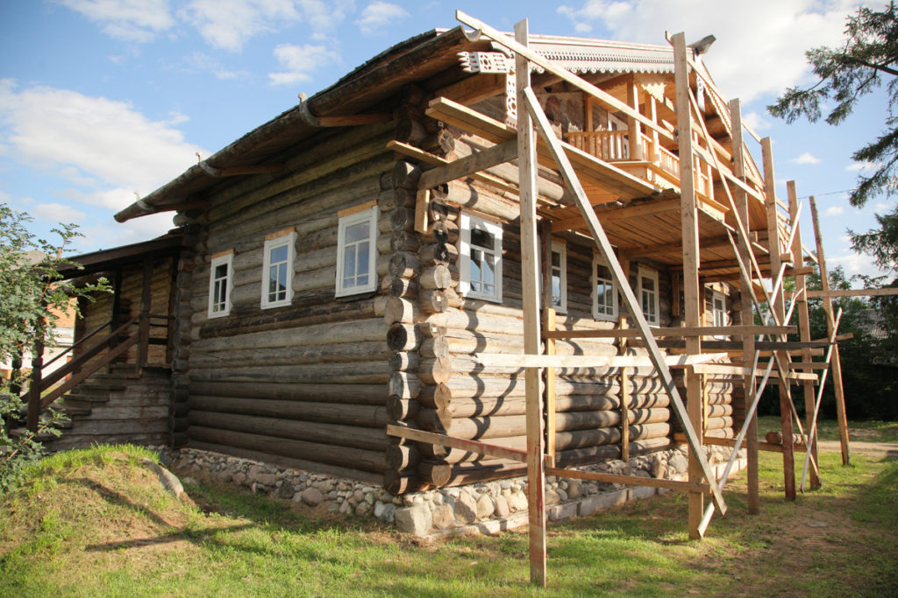
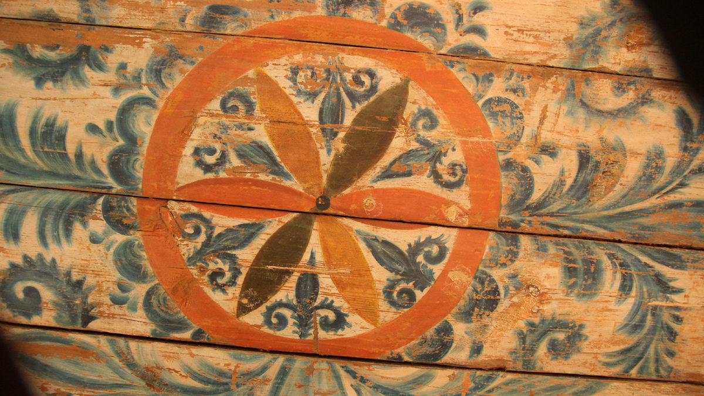

Алёшкин дом
Чурковская. Родовой дом Петровских: фасад, интерьер, портреты, лев и единорог. Главный герой маршрута, который сегодня можно собрать только из честно подписанных свидетельств.
Расписные дома Русского Севера
Лев, единорог, хозяева дома и нарисованная архитектура пережили саму избу. Пройди от фронтона к потолку и увидь: здесь расписывали не отдельные вещи — краской собирали весь дом.
Главный интерактив · 7 остановок
Нажимай на зоны дома. Каждый шаг открывает документальный кадр и объясняет, как роспись меняла архитектуру — от знака снаружи до цельного мира внутри.

Человеческая история
Мастера Петровские работали в Вельском и Шенкурском уездах. Их узнают по цветочным композициям, синим «морозным» завиткам и паре льва с единорогом. В родовом Алёшкином доме исследователи нашли редкую вещь — портретную живопись на опечке.
К 2008 году сохранность дома оценивали примерно в 30 процентов, фасадная роспись осыпалась. Сам дом спасти не удалось. Но обмеры, фотографии и снятые фрагменты сохранили возможность читать его пространство.

Посмотри ближе



Не каталог узоров, а судьбы домов
Чурковская. Родовой дом Петровских: фасад, интерьер, портреты, лев и единорог. Главный герой маршрута, который сегодня можно собрать только из честно подписанных свидетельств.
Заручей, 1884. Дом перевезли в Вельск, четыре года возвращали росписи и в 2018 году открыли как Музей домовых росписей Поважья.
Пакшеньга, 1886. Хозяева, лев, единорог и петух сохранились отдельно от утраченного дома — как части прежней архитектуры.
Россия и мир

Фасад, дверь, печь, встроенная мебель и потолок соединяются одним почерком. Дом работает как цельная цветная среда.

В богатых крестьянских усадьбах особенно украшали парадные помещения. Сходство не доказывает заимствование: сравнение показывает разные роли расписного интерьера.
Проверка взгляда
Выбери один ответ. Ошибка тоже откроет подсказку.
Куда дальше
Северная Двина, Мезень, Удора и Урал — другой дом, другая область и новый способ читать русскую архитектуру. Но сначала мы доводим до эталона этот маршрут.